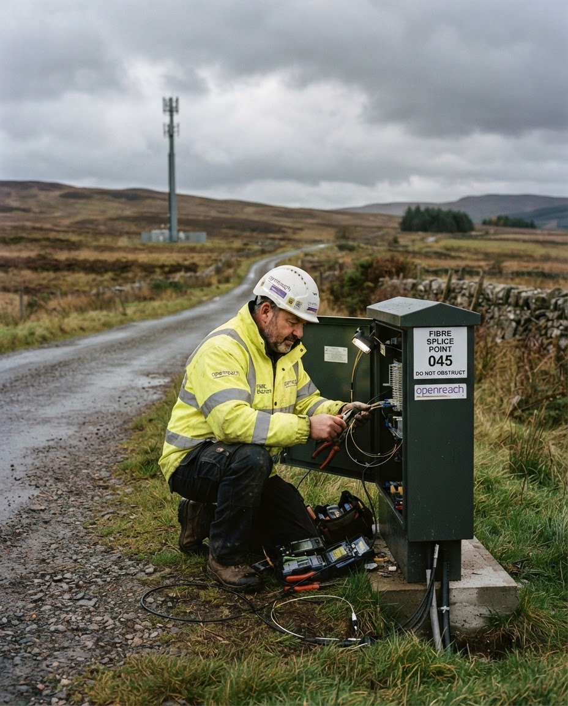
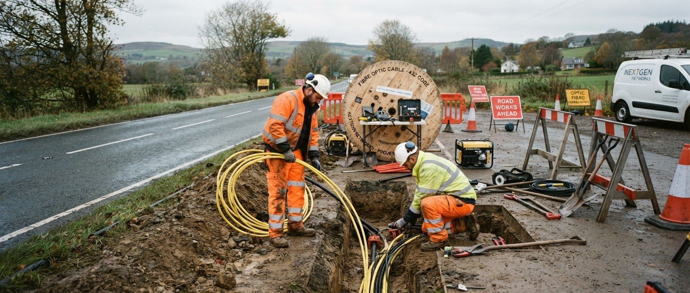
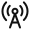
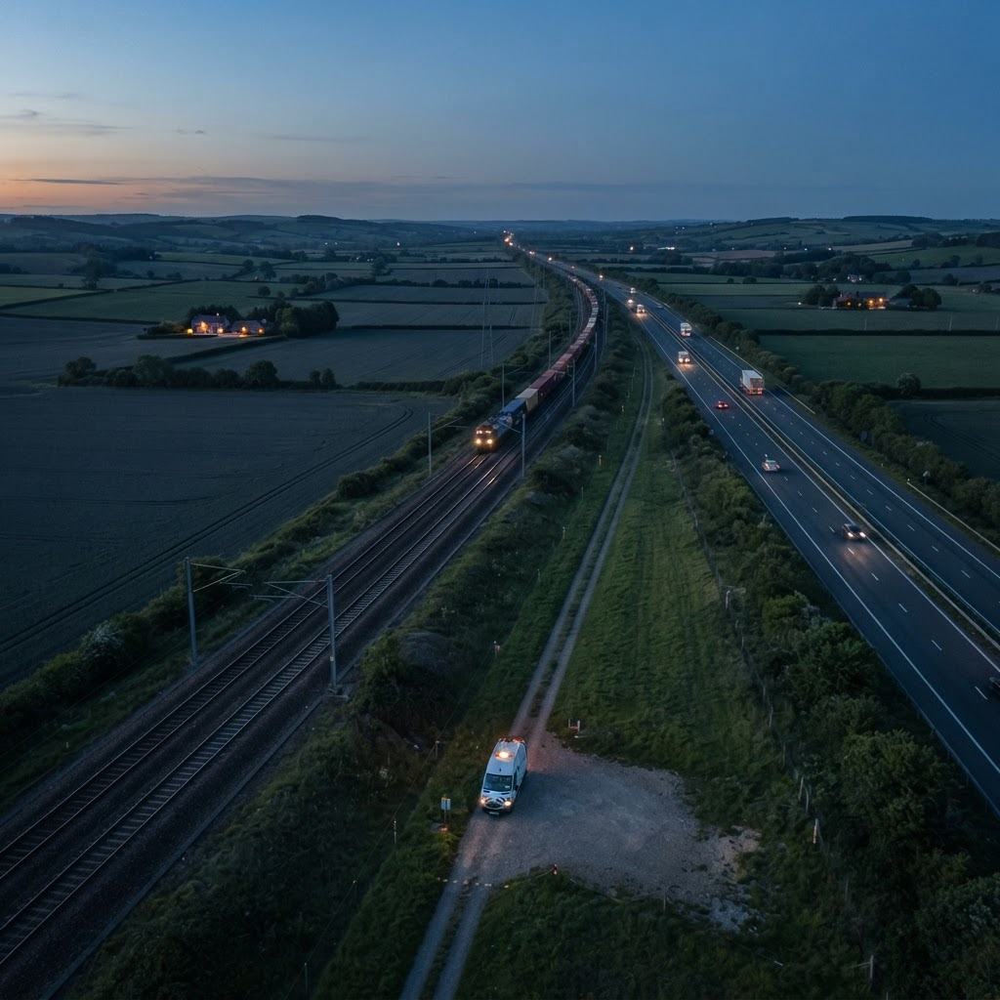
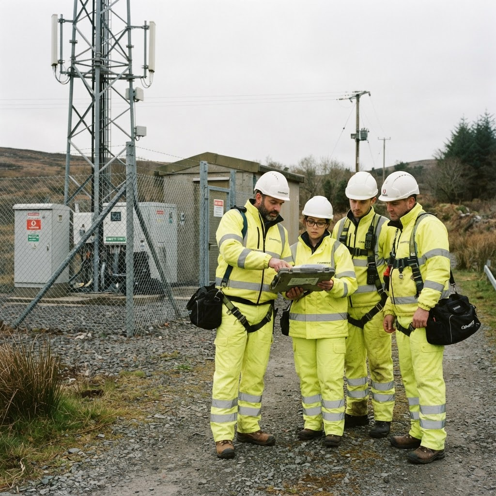
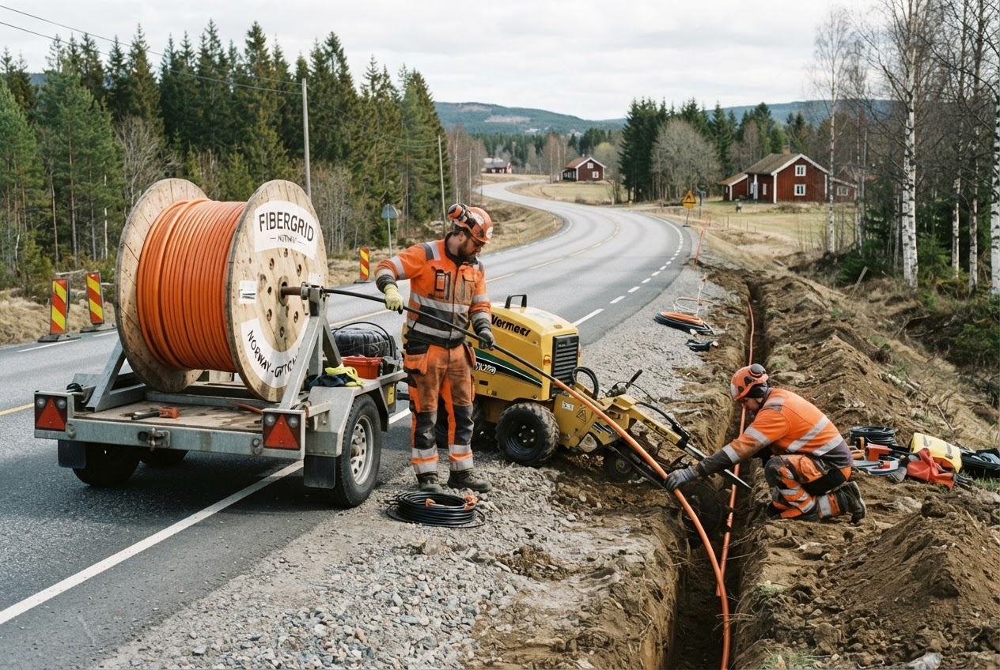
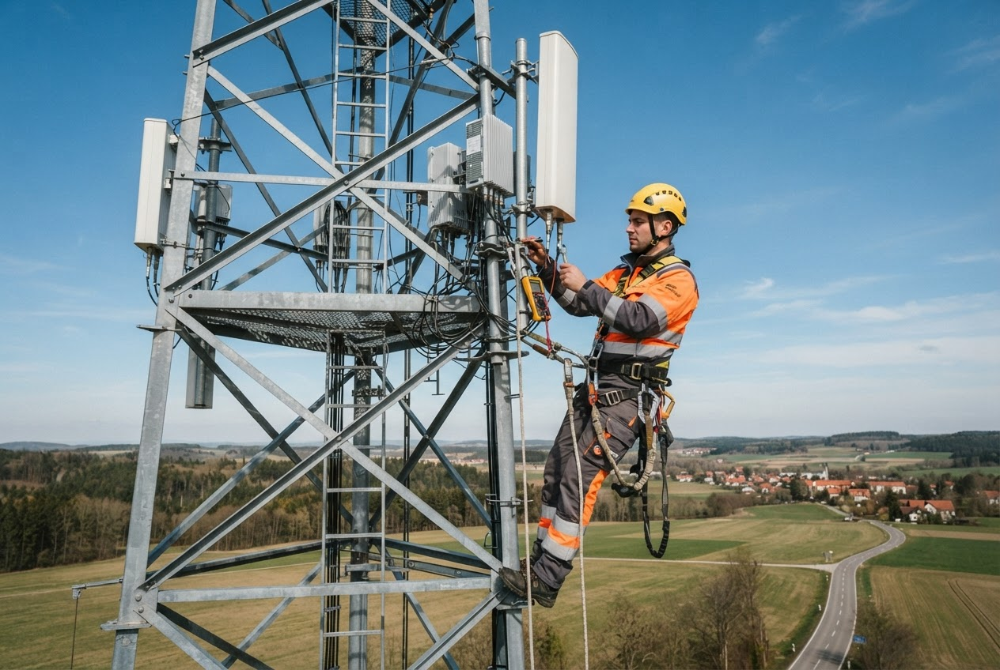
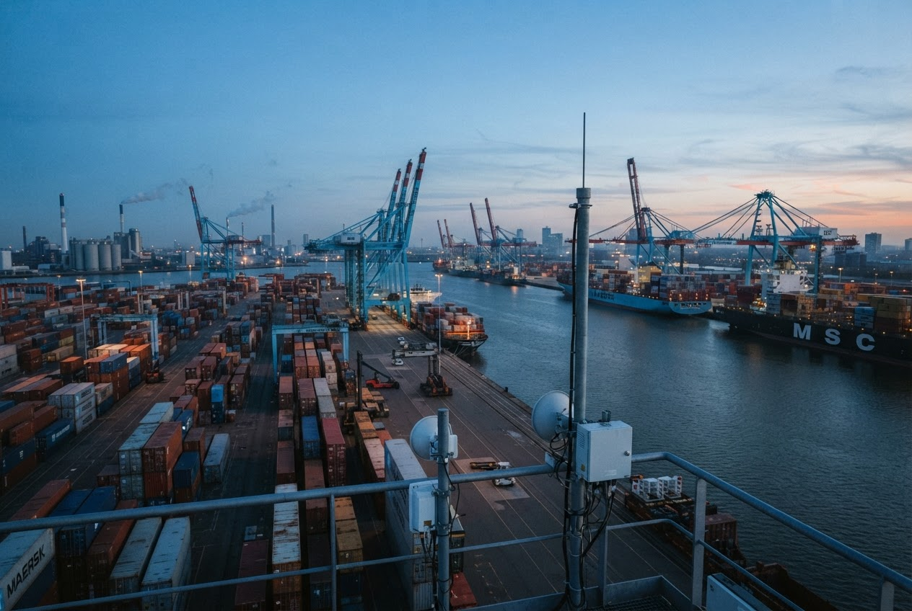
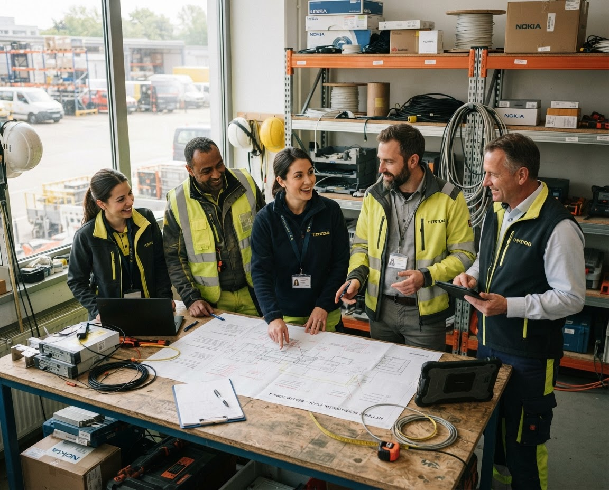

One accountable partner.
From survey and permitting to deployment, assurance and long-term maintenance.
Scale where it matters. Local delivery where it counts.
1,000+
specialists and field professionals
11
European markets served
22,000 km
network delivered and maintained
99.98%
service availability achieved
Infrastructure engineered for lasting performance.
Integrated capabilities for operators, utilities, public bodies and enterprise networks.

Fibre networks
Design and delivery from national backbone routes to the final connection.

Mobile infrastructure
Site acquisition, civil works, integration and optimisation for resilient radio networks.
Mission-critical systems
Secure connectivity for transport, energy, public safety and industrial operations.
One team across the network lifecycle.
A single operating model reduces handoffs, protects quality and gives clients clear accountability from first survey to ongoing service.
Plan & permit
Network strategy, survey, design, wayleaves and regulatory coordination.
02Build & integrate
Civil works, fibre deployment, radio installation, testing and commissioning.
03Operate & maintain
24/7 monitoring, preventive maintenance and rapid field response.
04Upgrade & optimise
Capacity expansion, modernisation and performance improvement.

38 field depots
Local crews. Shared standards.
Active markets
11
country operations
140+
active programmes
24/7
response coverage
Structured for control. Flexible in the field.
A stage-gated process with clear ownership, live data and measurable acceptance criteria.
Discover
Outcomes, constraints and baseline
Engineer
Buildable, permitted design
Mobilise
People, materials and controls
Deliver
Safe execution and live reporting
Assure
Test, hand over and improve

Certified systems
ISO 45001, 9001 and 14001 aligned operations
Visible leadership
Leaders on site, learning from work as done
Leading indicators
Risks, observations and close-outs tracked live
0.18
LTIFR / trailing 12 months
↓ 26% year on year
Proof in the field.
Complex programmes delivered with disciplined engineering, transparent reporting and local capability.

FibreSouthern Sweden
Regional fibre backbone across 14 municipalities

MobileGermany
5G site modernisation at national scale

Mission-criticalRotterdam, Netherlands
Resilient private network for port operations

“You see the result of your decisions in the network—and in the communities it serves.”